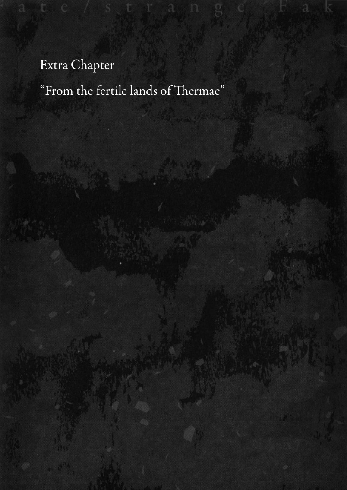

Capítulo Extra
"Das terras férteis de Thermae"
Capítulo Extra: Das terras férteis de Thermae
Ah, então é aqui que eu acabo.
A rainha reuniu seus pensamentos sob a chuva impiedosa.
Que fim lamentável.
A rainha reuniu seus pensamentos ao som da própria tíbia rangendo.
Morrer aqui não é o problema.
A rainha reuniu seus pensamentos sob o calor dos dedos duros como rocha esmagando-lhe o pescoço.
Os deuses... não culpo a artimanha da deusa Hera.
A rainha reuniu seus pensamentos sob o cheiro do sangue derramado das amazonas.
Nossa deusa guardiã, Ártemis.
A rainha verbalizou seu desejo sob o calor das chamas da cidade destruída.
Meu pai, o deus da guerra Ares.
A rainha compôs sua prece diante da visão do mundo inteiro sendo coberto por uma sombra escura.
Eu lhes suplico. Não me importo se levar uma eternidade. Que este herói lendário um dia encontre as verdadeiras respostas para as dúvidas que teve sobre nós. Que aprenda que não somos guerreiras mesquinhas que recorreriam a estratagemas vergonhosos para baixar sua guarda. O fato de estarmos morrendo neste massacre sem sentido não é o problema. Todas as guerreiras da tribo, eu incluída, vivemos a vida inteira prontas para que isso acontecesse. O sacrifício desejado pelos deuses não é diferente dos desastres e das pragas da terra. Mas morrer enquanto o herói que vai nos matar pensa que somos covardes...
A rainha nunca chegou a ouvir o som da própria tíbia se despedaçando por completo.
Porque o som já havia desaparecido inteiramente de seu mundo.
Essa é a única parte verdadeiramente lamentável.
No breve instante entre o pescoço se partir e a consciência se apagar...
A rainha viu o divino dentro de si.
E foi nesse momento que percebeu.
Não... há mais uma coisa lamentável. Minhas desculpas, herói lendário.
Que expressão fazia seu matador, o primeiro herói lendário que ela admirara, ao matá-la?
Enquanto perdia a visão e a audição, não havia como saber.
Mas, no instante em que a rainha recebeu seu convite para Hades, deixou para trás os remorsos que sentia pelo herói que a matara.
Imploro seu perdão de todo o coração, você de radiante glória, você destinado a se tornar um verdadeiro herói e, por fim, ascender ao posto dos deuses.
O enorme machado em suas mãos caiu no chão com um ruído surdo.
Sua vida se encerrou ao mesmo tempo que esse último som que ouviu se dissipou pela terra.
A lâmina do machado, embebida em seu desejo, ainda cintilava depois de deixar suas mãos.
...O que eu lhe fiz foi...